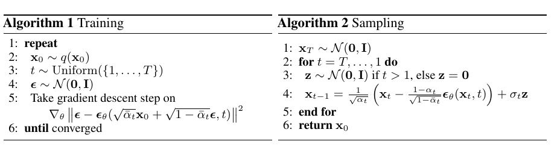

Introduction
Diffusion models seem to have taken the world by storm due to their amazing generative powers. That is not their only
advantage, however. With a bit of a tongue in the proverbial cheek, statistical methods can be traditionally classified
as either inflexible (classical stats), computationally expensive (MCMC), or non-analytical (boosted trees). From this
perspective, diffusion models are a significant outlier since they are extremely flexible, provide access to the full
posterior (and conditional) distributions, and are computationally less expensive than many of the competing methods.
General structure

An overview of generative models
(
source)
Diffusion models are composed of two separate processes, the forward and the backward.
Forward diffusion
In general - a diffusion process can be characterized by a Markov diffusion kernel given a final state \(\pi(x)\):
\[\begin{equation}
q(x_t | x_{t-1}) = T_\pi(x_t | x_{t-1}; \beta_t)
\end{equation}\]
Since it’s a length-one Markov process, we have for the full joint: \[\begin{equation}
q(x_{t=0:T} ) = q(x_0) \prod_{i=1}^T q(x_i | x_{i-1})
\end{equation}\]
Usually, we use a Gaussian diffusion, for which the posterior is closed form (c.f. the 1-step update in Kalman filtering):
\[\begin{equation}
q(x_t | x_{t-1}) = \mathcal{N}(\sqrt{1 - \beta_t}x_{t-1}, \beta_t \mathbf{I})
\end{equation}\]
\(\beta_i\)s are called the variance schedule, with usually \(\beta_1 < \beta_2 < ... < \beta_T\).
Moreover, due to the property of the Gaussian distribution:
\[\alpha_t := 1 - \beta_t\]
\[\bar{\alpha}_t := \prod_{s=1}^t \alpha_t\]
\[\begin{equation}
q(x_t | x_0) = \mathcal{N}(\sqrt{\bar{\alpha_t}}~x_0, (1 - \alpha_t) \mathbf{I}),
\end{equation}\]
meaning any state in the forward process can be expressed knowing just the initial one and the variance schedule. In
general, the theoretical underpinning of Langevin dynamics guarantees any smooth distribution can be corrupted into
Gaussian noise, meaning the initial distribution can be almost arbitrarily complex, giving the model its expressive power.
Reverse diffusion
The reverse process is characterized by a new transition probability \(p(x)\).
Its starting point is the stationary distribution at the final time \(T\):
\[\begin{equation}
\pi(x_T) := p(x_T)
\end{equation}\]
Like before:
\[\begin{equation}
p(x_{t=T:0}) = p(x_T) \prod_{i=T-1}^1 p(x_i+1 | x_{i})
\end{equation}\]
For Gaussian (and binomial), the joint is still in the same family; however, there is no closed-form for the parameters \(\mu\) and \(\Sigma\).
These need to be estimated, in this case via neural networks.
A natural training target is the likelihood of the original data \(p(x_0)\) as given by the learned reverse process’ distribution,
obtained by marginalizing the full joint:
\[\begin{equation}
p(x_0) = \int_{\mathcal{X}} p(x_{t=T:0}) ~ dx_1 .... dx_T
\end{equation}\]
This is computationally intractable! A trick is to use annealed importance sampling - comparing the relative probability of the backward - \(p\) - and the forward trajectories \(q\), where the latter are known in closed form:
\[\begin{equation}
p(x_0) = \int_{\mathcal{X}} q(x_{t=1:T}) ~p(x_T)~ \prod_{t=1}^T \frac{p(x_{t-1}|x_t)}{q(x_{t}|x_{t-1})} ~ dx_1 .... dx_T
\end{equation}\]
In the limit of very small \(\beta\), both directions become the same.
Training
We maximize the expected log likelihood of the original data \(p(x_0)\) under the original true distribution \(q(x_0)\):
\[\begin{aligned}
& L(p, q) = \mathbb{E}_{q(x_0)} [p(x_0)] = \int_{\mathcal{X}} q(x_0) ~ \log p(x_T)~ dx_0\\
& = -~\mathbb{E}_{q} \left[ \underbrace{D( q(x_T | x_0) || p(x_T))}_{L_T} + \underbrace{\sum_{t=2}^T D( q(x_{t-1} | x_t, x_0) || p(x_{t-1} || x_t))}_{L_{t-1}} - \underbrace{\log p(x_0 | x+1)}_{L_0} \right]
\end{aligned}\]
It can be lower bounded by a closed-form expression:
\[\begin{aligned}
L \geq K = - \sum_{t=2}^T \int q(x_0, x_t) ~ D(q(x_{t-1}|x_{t}, x_{0}) ~||~ p(x_{t-1}|x_{t}))~dx_0,~dx_t\\
+ H_q(X_T|X_0) - H_q(X_1|X_0) - H_p(X_T),&
\end{aligned}\]
where \(D\) is the K-L divergence and H denotes the (conditional) entropies. Hence maximizing the latter maximizes the
former.
Additionally, conditioning the forward process posteriors on \(x_0\) gives us the closed-forms
\[\begin{equation}
q(x_{t-1}|x_{t}, x_{0}) = \mathcal{N}(\tilde{\mu}_t, \tilde{\beta}_t \mathbf{I})
\end{equation}\]
\[\tilde{\mu}_t := \frac{\sqrt{\bar{\alpha}_{t-1}} \beta_t}{1 - \bar{\alpha}_t}~x_0 + \frac{\sqrt{\bar{\alpha}_{t}} (1 - \bar{\alpha}_{t})}{1 - \bar{\alpha}_t}~x_t\]
\[\tilde{\beta}_t := \frac{1 - \bar{\alpha}_{t-1}}{1 - \bar{\alpha}_t} \beta_t\]
The goal of training is therefore to estimate the reverse Markov transition densities \(p(x_{t-1}|x_t)\):
\[\hat{p}(x_{t-1}|x_t) = \underset{p}{\operatorname{argmax}} K\]
As mentioned, in the case of the Gaussian and binomial, the reverse process stays in the same family, therefore the task amounts to
estimating the parameters.
Variance schedule
Since \(\beta_t\) is a free parameter, it can be learned simultaneously with the whole \(K\) optimization procedure,
freezing the other variables and optimizing on \(\beta\). Alternatively, the first paper also treated a sequence as a
hyperparameter and used a simply linearly increasing \(\beta\). This is also the approach of Ho et al.
Estimating \(p\)
Our goal is to learn the following:
\[
p(x_{t-1} | x_t) = \mathcal{N}(\mu(x_t, t), \Sigma(x_t, t)), ~~ t \in [T, 0]
\]
which corresponds to estimating \(\mu(x_t, t), \Sigma(x_t, t)\).
For the variance, it is simply set to be isotropic with the diagonal entries either fixed at a constant (either
\(\beta_t\) or \(\tilde{\beta}_t\)) or learned. The latter proved to be unstable in Ho et al., but has since been
successfully implemented.
The mean is, of course, learned in all implementations and proceeds as follows: by inspecting the \(L_{t-1}\) term in the likelihood in Training, the minimizing mean can be expressed by the reparametrization:
\[x_t = \sqrt{\bar{\alpha}_t}~x_0 + \sqrt{1 - \bar{\alpha}_t}~\epsilon \]
\[\epsilon \sim \mathcal{N}(0, \mathbf{I})\]
\[\begin{equation}
\mu(x_t, t) = \frac{1}{\sqrt{\alpha_t}} (x_t - \frac{\beta_t}{\sqrt{1 - \bar{\alpha_t}}} \epsilon_{\theta}(x_t, t)),
\end{equation}\]
meaning we instead learn the estimator of the noise in the mean term at step \(t\): \(\epsilon_{\theta}(x_t, t))\) from the state \(x_t\).
This can be further simplified by setting \(t\) to be continuous on \([1, T]\) and optimizing the following simplified
objective for \(\epsilon_\theta(x_t, t)\):
\[\begin{equation}
L_{\text{simple}}(\theta) := \mathbb{E}_{t, x_0, \epsilon} \left[\Vert \epsilon - \epsilon_\theta(\sqrt{\bar{\alpha}_t} x_0 + \sqrt{1 - \bar{\alpha}_t} \epsilon, t) \Vert^2\right]
\end{equation}\] This can be optimized using standard optimization techniques, such as gradient descent. We can now state
the two algorithms needed to first, train the noise estimator \(\epsilon_\theta\), and then, obtain a sample from the
reverse diffusion process: 
Architecture
Ho et al. used a variation of an U-net called PixelCNN++ to estimate
\(\epsilon_{\theta}(x_t, t))\):

The original U-net

PixelCNN++ structure
How does it work in practice?
Example - recovery

Recovery (middle row) of a spiral distribution (top) using a Gaussian diffusion model. The bottom row represents the
“drift term”, i.e. the field controlling the mean for the “particles” in the next step of the reverse
process.
Example - generation
Ho et al. used the modified network for both conditional and unconditional generation.
The unconditional generation was performed by estimating \(x_0\) - the end result of the reverse process - from
initially random \(x_T\). The following figure shows the order in which features crystallize when the initial state is
itself sampled from various points of the reverse process. The training dataset was CIFAR10.

Unconditional generation from the reverse process
sample
For conditional generation, the authors selected a \(x_t\) from the actual distribution and sampled from the predictive
posterior \(p(x_0|x_t)\). The following figure shows the results conditioned on the bottom-right quadrant, for a network
trained on CelebA-HQ:

Conditional generation samples from a given state: the earlier the \(x_t\), the more deterministic the
outcome.
Imagen & DALL-E 2
Ho and Salimans improved the above procedure by introducing the notion of guiding
the model during training on labeled data, i.e. estimating \(\epsilon_\theta(x_t, t ∣ y)\), where \(y\) are the labels. The
crux of the approach is training both on conditional and unconditional objectives at once by randomly setting the class
label to a null class with some predetermined probability. Likewise, the samples are drawn from a convex combination
(with the same coefficient) of both \(p\)-s.
This was used by Nichol et al. in GLIDE, which uses information extracted from
text to do the guiding, combining a transformer with the previously described architecture.
This approach has been used to construct Imagen, which uses additional diffusion
models to up-sample the image created by the guided diffusion process. The text embeddings are provided by a
pretrained transformer’s encoder.

Imagen structure
The other diffusion-based model to make waves recently - DALL-E 2 - uses a bit more complex approach:

DALL-E 2 architecture
First, it re-uses a model called CLIP (Contrastive Language-Image Pre-training) to construct a mapping between captions
and images (top of the schematic above). In practice, the net result of this is a joint embedding of text and images
in a representation space.
In generation, this model is frozen and a version of the GLIDE guided diffusion model is used to generate images
starting from the image representation space (as opposed to random noise, for instance). As previously, additional
up-samplers are used in the decoder, as well.
To generate from text prompts, we need to map the caption text embeddings to the above mentioned image embeddings, which
are the starting point for the decoder. This is done with an additional diffusion model called the prior, which
generates multiple possible embeddings. In other words, this is a generative model of the image embeddings given the
text embeddings. The prior trains a decoder-only transformer to predict the conditional reverse process, as opposed to the U-net
used in other examples.

DALL-E 2: interpolation of the image embedding
space by the decoder